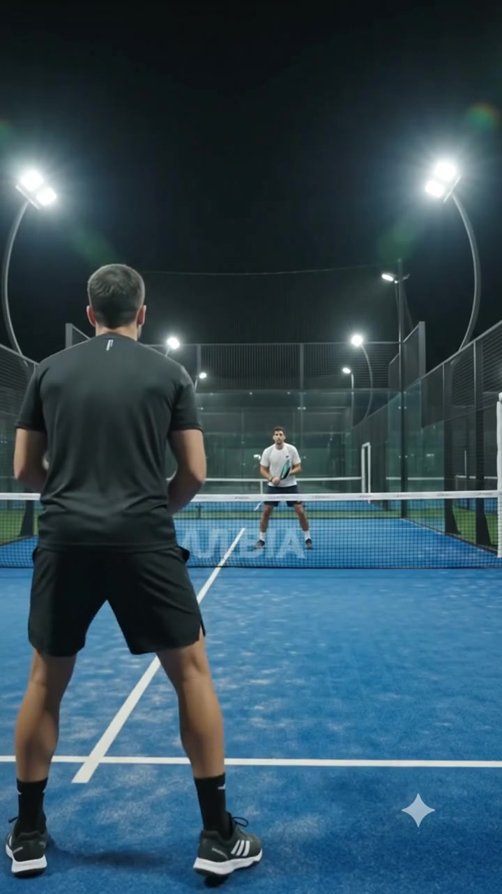
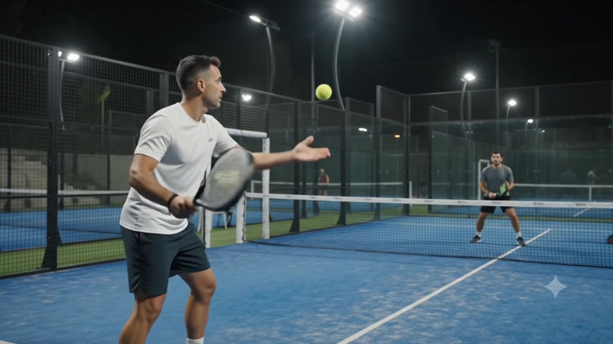

ארבעה מגרשים מוארים בתאורת תחרות, בר לילה, ואווירה שלא נגמרת כשהעבודה נגמרת. תל אביב, כל ערב בשבוע.

ארבעה מגרשים מוארים בתאורת תחרות מלאה, בר פתוח, וכניסה חופשית ליציע. זה הרגע שהעיר מתחילה להירגע, והמגרש שלכם כבר דולק.
האוויר קריר, התאורה חדה, והמגרש שקט מהמולת היום. פאדל לילה נבנה סביב השעות שבהן הכי בא לכם לשחק, לא סביב שעות פתיחה של משרד.

גם באמצע הלילה יש איפה לשחק, ולכל מגרש אופי משלו.
בוחרים שעה בוואטסאפ, מגיעים, ומשחקים עד שאתם אומרים די. בלי לחץ של התור הבא.
עדיפות בהזמנת מגרשים, הטבת פתיחה, ועדכון ראשונים כשנפתח מגרש חדש. בלי ספאם, רק לילות טובים.